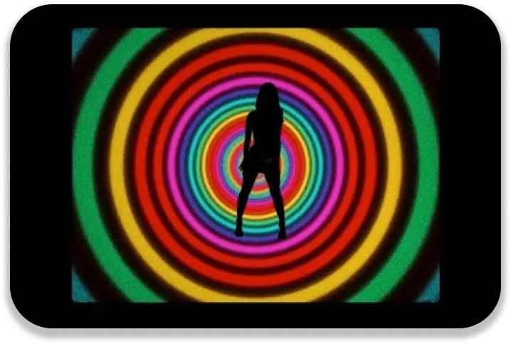

Accepting. This is perhaps one of the most important things about our society. Nowadays, we are encouraged to be ourselves. To accept what is around us. Marina's song in general presents contemporary society. By the questions about the environment, about society but also about ourselves. About the equality between everybody.

Self-acceptance
Through her lyrics, Marina shows us that we can assume ourselves. We can have the courage to be ourselves without having to look 'normal'. We don't have to follow what society wants from us. It shouldn't have any control on how we are. We are born to be unique, not like the rest. In the video clip, a scene with sheep reminds This expression means that we follow the movement, the majority.
“You don’t have to be like everybody else, You don’t have to fit into the norm, You are not here to conform”
“From the day we’re born, You are not here to conform”
Marina also shows us that we are all the same. By citing geographical locations, she expresses that we are the same everywhere. "Back to a time before I had form": we all have the same inner self. We are all equal in the end. That's why we have to be different in appearance. "Here to take a look inside myself": we have to focus on ourselves and not on others. Others do not make us.
The expectation of a better society
The lyrics also refer to the evolving society. "We're now living in a seminal age": this is a crucial moment in History. People are trying to create a better society, problems are being solved. Social and cultural differences are being reduced. Marina talks about an important social change. But there can be an ecological reference that we can notice from the beginning. "We're not here so we can blow it all": the lyrics refers to the menace of global warming. The fact that we put ourselves in danger if we don't try to slow it down. And urges us to act to prevent it.
